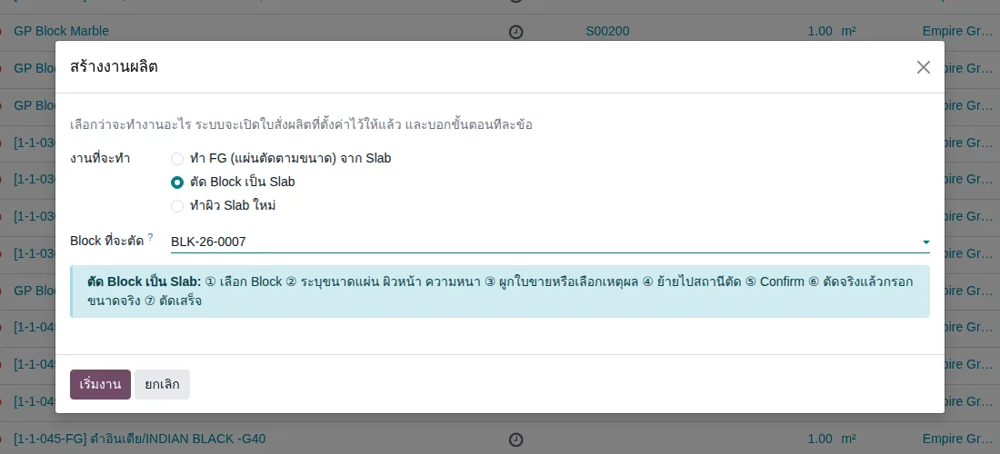
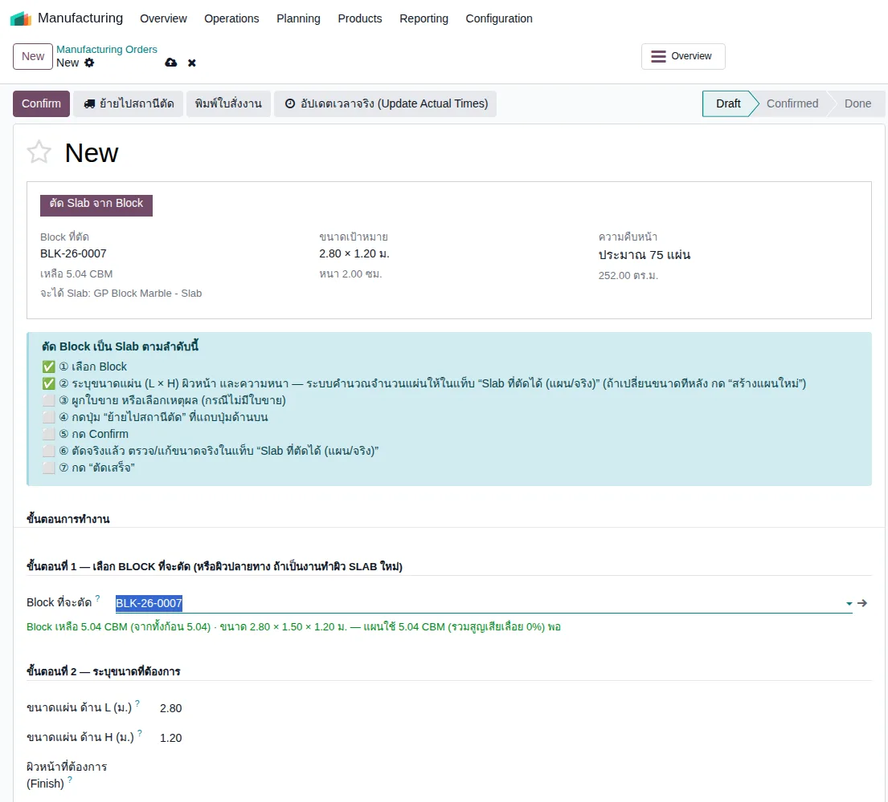
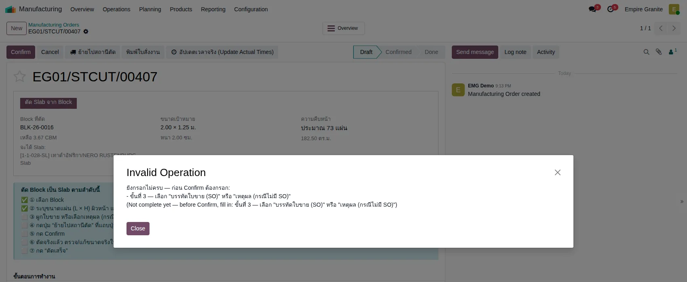
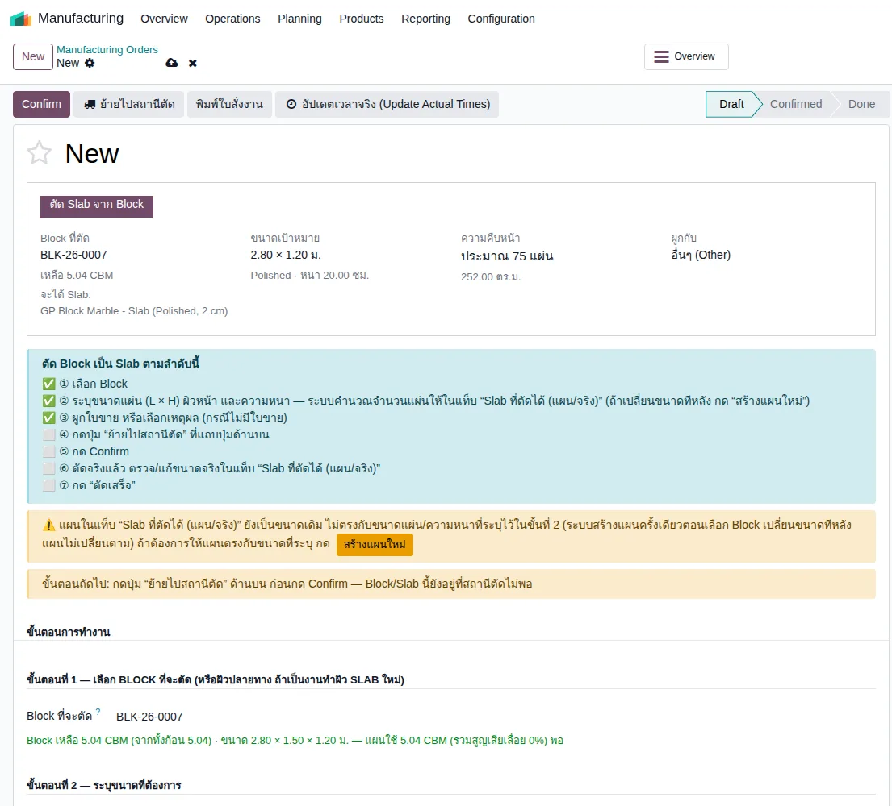
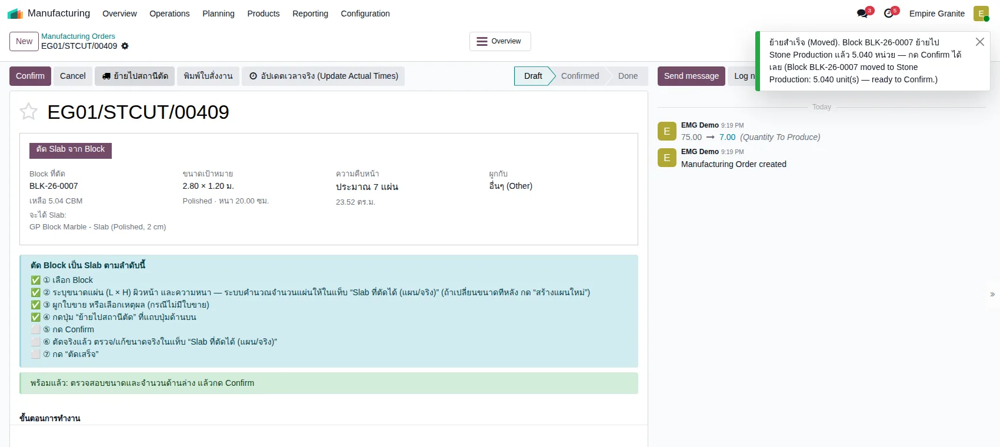
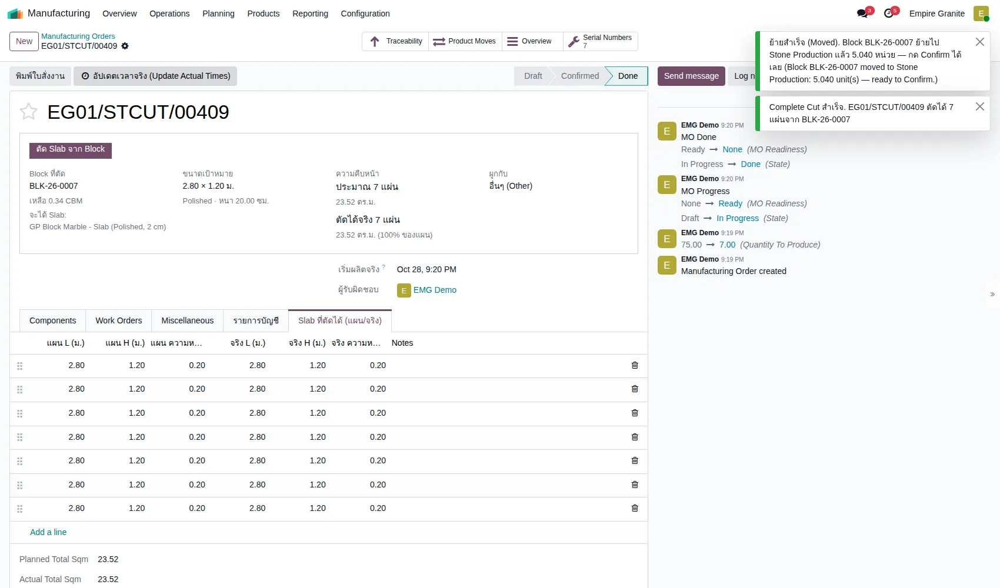

อัปเดตล่าสุด: 28 ตุลาคม 2569 (2026-10-28) · โมดูล stone_slab_inventory 19.0.2.109.46 · ภาพหน้าจอถ่ายจากระบบทดสอบ eg-tst เมื่อ 28 ตุลาคม 2569
บทนี้อธิบายการ ตัด Block เป็น Slab (ใบสั่งตัด หรือ Cut Order) ที่เริ่มจากปุ่ม "สร้างงานผลิต" ซึ่งเป็นทางเข้าเดียวกับงาน FG (บทที่ 38) เมื่อเลือกงานนี้ ใบสั่งผลิตจะมีกล่อง "ตัด Block เป็น Slab ตามลำดับนี้" ที่ติ๊ก ✅ ให้ทีละข้อเมื่อทำครบ จึงดูได้ตลอดว่าทำถึงขั้นไหน
1. ตัด Block เป็น Slab คืออะไร
ตัด Block เป็น Slab คือการนำหินก้อน (Block) ไปเลื่อยเป็นแผ่น (Slab) ตามขนาดที่กำหนด ระบบสร้างใบสั่งผลิต (MO) ให้ ตัดสต็อก Block ออก และสร้าง Slab เป็น Lot ใหม่ แผ่นละ 1 Lot เก็บที่ Stone Available
2. แนวคิดหลัก 6 ข้อ
- 1 ใบสั่งตัด = 1 Block ใบสั่งตัดผูกกับ Block เดียว ตัดได้หลายแผ่นในใบเดียว
- ระบบสร้าง "แผน" ให้ครั้งเดียว ตอนเลือก Block ระบบคำนวณจำนวนแผ่นจากปริมาตร Block ÷ ปริมาตรแผ่นหนึ่งแผ่น และสร้างตารางแผน ถ้าเปลี่ยนขนาดแผ่นหรือความหนาทีหลัง แผนไม่เปลี่ยนตาม ต้องกด "สร้างแผนใหม่" (ระบบมีกล่องเตือนพร้อมปุ่มให้ ดูหัวข้อ 4.3)
- ต้องมีใบขายหรือเหตุผล ถ้าตัดโดยไม่มีใบขาย ต้องเลือก "เหตุผล (กรณีไม่มี SO)" ตัวเลือกคือ ปกติ, งานเพิ่ม, ตัดซ่อม, วัตถุดิบสำหรับ FG, อื่นๆ
- ย้าย Block ไปสถานีตัดก่อน Confirm ปุ่ม "ย้ายไปสถานีตัด" ย้าย Block จากโซนว่างไป Stone Production ให้ ไม่ต้องทำใบโอนเอง
- ตัดจริงอาจไม่เท่าแผน ตารางมีคอลัมน์ "จริง" (L, H, ความหนา) ค่าเริ่มต้นเท่าแผน แก้ได้ก่อนกด "ตัดเสร็จ" ระบบสร้าง Slab ตามขนาดจริง
- ขนาดในตารางแผนเป็นเมตร (2.80 ไม่ใช่ 280) ส่วนความหนาในขั้นที่ 2 กรอกเป็น ซม. เมื่อเลือก Other
3. ภาพรวมขั้นตอน
กล่องสีเหลืองคือจุดที่ทำพลาดบ่อย: แผนไม่ตามขนาดที่เปลี่ยนทีหลัง และลืมย้ายไปสถานีตัด
4. ขั้นตอนทีละหน้าจอ
ตัวอย่างที่ใช้: ตัด Block BLK-26-0007 (5.04 ลบ.ม. ขนาด 2.80 × 1.50 × 1.20 ม. หิน GP Block Marble) เป็น Slab ขนาด 2.80 × 1.20 ม. หนา 20 ซม. ผิว Polished ไม่มีใบขาย เหตุผล "อื่นๆ" (ทดลองบน eg-tst ผู้ใช้ emgdemo บริษัท Empire Granite ใบสั่งตัด EG01/STCUT/00409)
4.1 เลือกประเภทงานและ Block
ที่หน้า Manufacturing → Operations → Manufacturing Orders กดปุ่ม สร้างงานผลิต ข้างปุ่ม New (หรือใช้เมนู Manufacturing → Operations → สร้างงานผลิต / Stone Slab → สร้างงานผลิต) เลือก ตัด Block เป็น Slab แล้วเลือก Block ที่ช่อง "Block ที่จะตัด" กด เริ่มงาน หน้าต่างสรุปขั้นตอนทั้ง 7 ข้อให้ดู

4.2 ใบสั่งตัดเปิดขึ้นพร้อมกล่องนำทาง
ระบบเปิดใบสั่งตัดที่เลือก Block ไว้แล้ว และใส่ขนาดแผ่น L × H เริ่มต้นจากขนาด Block ให้ (ตัวอย่าง 2.80 × 1.20 ม.) ด้านบนมี กล่อง "ตัด Block เป็น Slab ตามลำดับนี้" ✅ ① และ ② ติ๊กแล้ว ⬜ ③–⑦ ยังไม่ได้ทำ การ์ดสรุปแสดง Block, ขนาดเป้าหมาย, จำนวนแผ่นโดยประมาณ

ถ้ากด Confirm ตอนยังกรอกไม่ครบ ระบบเตือนครั้งเดียวว่าขาดอะไรบ้าง (เดิมเตือนทีละข้อ ต้องกดหลายรอบ)

4.3 ระบุขนาดแผ่น ความหนา ผิวหน้า และเหตุผล
ในกลุ่ม "ขั้นตอนที่ 2" เลือก ผิวหน้า (Polished) และ ความหนาที่ต้องการ = Other แล้วกรอก ความหนา (ซม.) = 20 ในกลุ่ม "ขั้นตอนที่ 3" เลือก เหตุผล (กรณีไม่มี SO) = อื่นๆ ✅ ③ ติ๊กแล้ว
จุดสำคัญ: ตารางแผนถูกสร้างไว้ตอนเลือก Block (ตัวอย่าง 75 แผ่น หนา 2 ซม.) พอเปลี่ยนความหนาเป็น 20 ซม. แผนยังเป็นของเดิม ระบบจึงขึ้น กล่องเตือนสีเหลือง "แผนในแท็บ Slab ที่ตัดได้ ยังเป็นขนาดเดิม" พร้อมปุ่ม สร้างแผนใหม่ กดปุ่มนี้ (ยืนยัน) แผนเปลี่ยนเป็น 7 แผ่น (23.52 ตร.ม.) และกล่องเตือนหายไป

4.4 ย้ายไปสถานีตัด
กดปุ่ม ย้ายไปสถานีตัด ที่แถบปุ่มด้านบน ระบบแจ้ง "ย้ายสำเร็จ Block BLK-26-0007 ย้ายไป Stone Production แล้ว 5.040 หน่วย — กด Confirm ได้เลย" หน้าจอรีเฟรชเอง ✅ ④ ติ๊ก และขึ้นแถบสีเขียว "พร้อมแล้ว"

4.5 Confirm แล้วตัดเสร็จ
กด Confirm ใบสั่งตัดเป็น In Progress ไปแท็บ Slab ที่ตัดได้ (แผน/จริง) ตรวจขนาด "จริง" ของแต่ละแผ่น (ค่าเริ่มต้นเท่าแผน แก้ได้) แล้วกด ตัดเสร็จ ระบบสร้าง Slab ตามขนาดจริง แจ้ง "Complete Cut สำเร็จ ตัดได้ 7 แผ่นจาก BLK-26-0007" และสถานะเป็น Done การ์ดแสดง "ตัดได้จริง 7 แผ่น 23.52 ตร.ม. (100% ของแผน)"

4.6 ผลที่ได้ในสต็อก
| รายการ | ผลที่ตรวจในระบบ |
|---|---|
| Slab ที่ได้ | 7 Lot (แผ่นละ 1 Lot) ขนาด 2.80 × 1.20 ม. หนา 0.20 ม. ตรงกับขนาดที่กรอก |
| Block ที่ใช้ | ใช้ไป 4.70 ลบ.ม. (7 แผ่น × 0.672) เหลือ 0.34 ลบ.ม. อยู่ที่ Stone Available (การ์ดแสดง "เหลือ 0.34 CBM") |
5. สรุปเงื่อนไขทั้งหมด
| สถานการณ์ | ระบบทำอย่างไร |
|---|---|
| เริ่มจาก สร้างงานผลิต → ตัด Block เป็น Slab โดยไม่เลือก Block | ตามการออกแบบ ไม่ให้เริ่ม ต้องเลือก Block ก่อน (ยังไม่ได้ทดลอง) |
| กด Confirm โดยยังไม่มีใบขายหรือเหตุผล | ไม่ผ่าน มีข้อความเดียวบอกสิ่งที่ยังขาด (ทดลองแล้ว) |
| เปลี่ยนขนาดแผ่น/ความหนาหลังมีแผนแล้ว | แผนไม่เปลี่ยนเอง แต่ขึ้นกล่องเตือนพร้อมปุ่ม "สร้างแผนใหม่" (ทดลองแล้ว) |
| กด "สร้างแผนใหม่" | แผนถูกแทนที่ด้วยแผนคำนวณใหม่ (ตัวอย่าง 75 → 7 แผ่น) ต้องยืนยันก่อน |
| กด ย้ายไปสถานีตัด | Block ย้ายไป Stone Production หน้าจอรีเฟรช ติ๊ก ④ |
| กด Confirm ก่อนย้าย Block | ตามการออกแบบ ระบบไม่ผ่านและให้ย้ายก่อน (ทดลองกรณีนี้กับงาน FG แล้ว ยังไม่ได้ทดลองซ้ำกับงานตัด Block) |
| กด ตัดเสร็จ | ได้ Slab ตามขนาดจริง 1 Lot ต่อแผ่น Block ที่เหลือคงอยู่ในสต็อก |
| แผนใช้ปริมาตรเกินที่ Block เหลือ | ตามการออกแบบ ระบบไม่ให้ Confirm และบอกว่าต้องการเท่าไร เหลือเท่าไร (ยังไม่ได้ทดลอง) |
6. สิ่งที่เปลี่ยนจากเดิม
| เดิม (ก่อน 28 ต.ค. 2569 ช่วงค่ำ) | ตอนนี้ |
|---|---|
| เปิดใบสั่งผลิตเปล่า ต้องเดาว่าต้องกรอกอะไรก่อนหลัง | เริ่มจาก "สร้างงานผลิต" และมีกล่องนำทาง 7 ขั้นที่ติ๊กให้เอง |
| กด Confirm แล้วเตือนทีละข้อ ต้องกดหลายรอบ | เตือนรวมครั้งเดียว บอกครบว่าขาดอะไร |
| เปลี่ยนความหนาแล้วแผนไม่เปลี่ยน ไม่มีอะไรเตือน ได้ Slab 2 ซม. 73 แผ่นทั้งที่ตั้งไว้ 20 ซม. | ขึ้นกล่องเตือนพร้อมปุ่ม "สร้างแผนใหม่" |
| ช่องความหนา (ซม.) ไม่ถูกนำไปใช้จนกว่าจะบันทึก (การ์ด คำเตือน และแผนยังอ่านค่าเก่า) | ใช้ค่าที่พิมพ์ทันที |
| หลังกด ย้ายไปสถานีตัด หน้าจอยังแสดงว่ายังไม่ได้ย้าย ต้องรีเฟรชเอง | หน้าจอรีเฟรชอัตโนมัติ (ใช้กับงาน FG ด้วย) |
7. FAQ
ต้องมีใบขายไหม
ไม่ต้อง เลือก "เหตุผล (กรณีไม่มี SO)" แทน ถ้ามีใบขาย ให้เลือกบรรทัดใบขายที่ขั้นที่ 3
ตัด Block ไม่หมดก้อนได้ไหม
ได้ ที่เหลือคงอยู่ในสต็อก (ตัวอย่างเหลือ 0.34 ลบ.ม.) ลดจำนวนแผ่นได้โดยลบแถวในตารางแผนก่อน Confirm (ยังไม่ได้ทดลองลบแถวเอง)
ปุ่ม "สร้างแผนใหม่" จะลบสิ่งที่แก้ในตารางไหม
ใช่ แผนเดิมถูกแทนที่ทั้งหมด ระบบถามยืนยันก่อน
ผิวหน้าจำเป็นไหม
ตัวอย่างเลือก Polished ถ้าไม่เลือก ตามการออกแบบระบบใช้ Slab ทั่วไปของวัสดุนั้น (ยังไม่ได้ทดลองกรณีไม่เลือก)
ทำผิว Slab ใหม่ (Re-finish) ใช้อะไร
เลือก "ทำผิว Slab ใหม่" ที่ สร้างงานผลิต แต่หน้านำทางของงานนี้ยังไม่มี (เปิดใบสั่งผลิตเปล่าแบบเดิม)
8. ข้อจำกัดที่ทราบ
- ทดลองผ่านหน้าจอครบเส้นทางเฉพาะกรณีไม่มีใบขาย (เหตุผล "อื่นๆ") เลือกผิว Polished และความหนา Other 20 ซม.
- ไม่ได้ทดลอง: ตัดจากใบขาย, ไม่เลือกผิวหน้า, แก้ขนาด "จริง" ให้ต่างจากแผน, ลบแถวในแผนเอง, แผนเกินปริมาตร Block, Confirm ก่อนย้าย Block, การยกเลิกใบสั่งตัดหลังย้าย Block
- ระบบเตือนเมื่อแผนไม่ตรงกับขนาดที่ระบุ แต่ไม่บังคับ และไม่สร้างแผนใหม่ให้เองเพื่อไม่ทับการแก้ด้วยมือ
- "ทำผิว Slab ใหม่" ยังไม่มีหน้านำทาง
- ตารางแผน/จริงยังเป็นเมตร
- ข้อมูลทดลองบน eg-tst: ใบสั่งตัด EG01/STCUT/00408 (73 แผ่น หนา 2 ซม. จาก BLK-26-0016) และ 00409 (7 แผ่น หนา 20 ซม. จาก BLK-26-0007) สร้าง Slab จริงในสต็อก และมีใบสั่งตัด Draft ค้างจากการทดสอบอีกหลายใบ